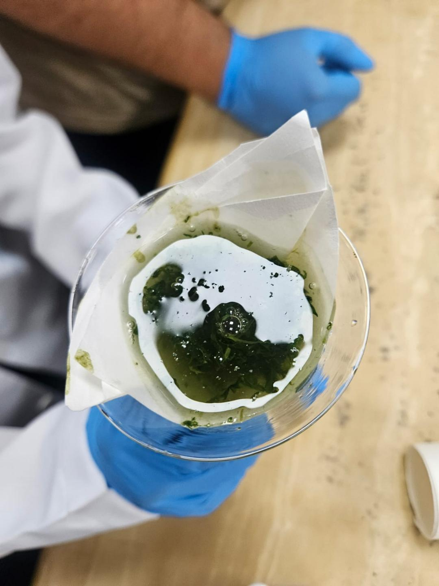
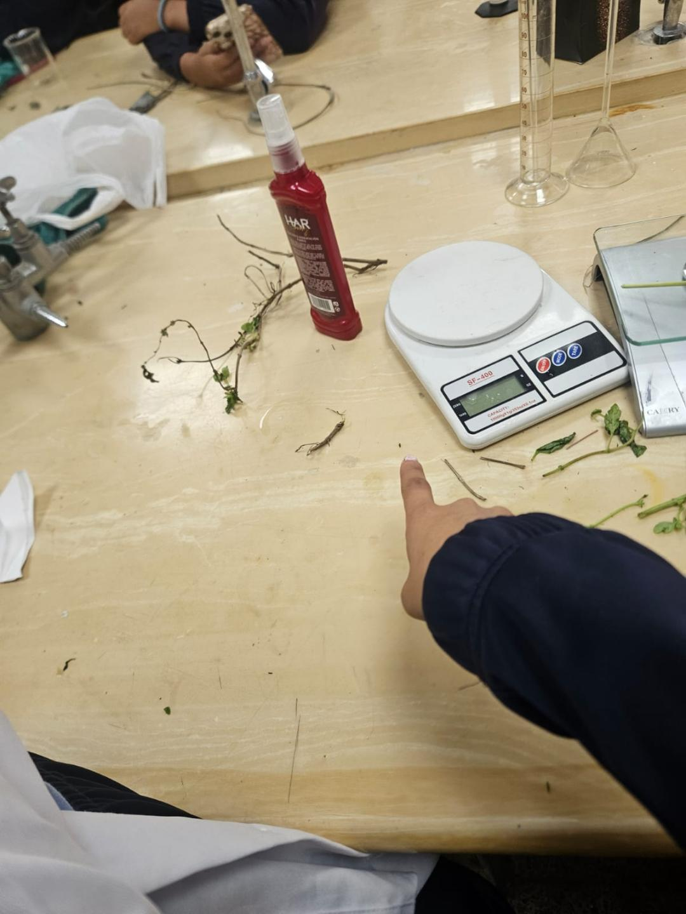
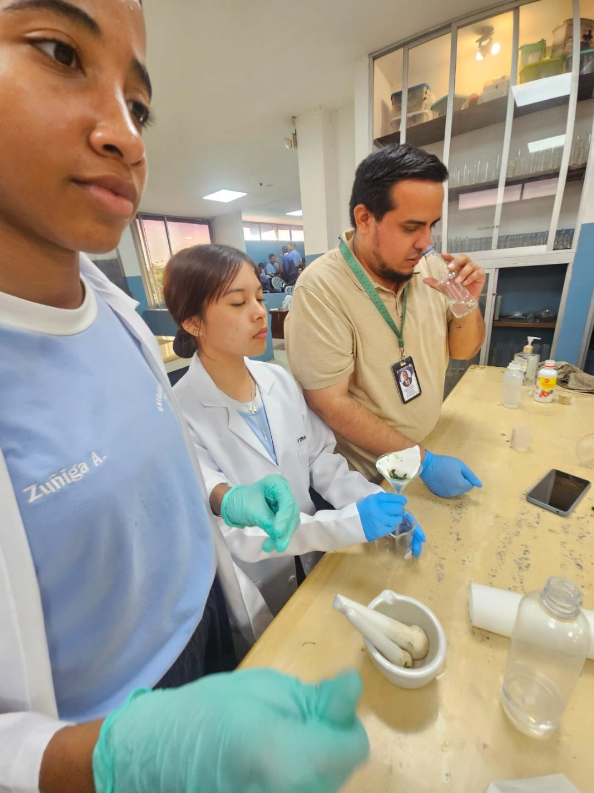

¿Qué es?
Es una sustancia diseñada para reducir la posibilidad de que los mosquitos se acerquen o piquen. Su función principal es preventiva.
Una guía escolar para comprender cómo prevenir las picaduras y utilizar estos productos de manera segura.
El repelente forma parte de las medidas que muchas personas utilizan para evitar las picaduras de mosquitos. Sin embargo, usarlo correctamente requiere conocer sus indicaciones, ingredientes, tiempo de protección y precauciones.
En este proyecto investigamos información de fuentes de salud reconocidas y la transformamos en una explicación sencilla, pensada para estudiantes y familias. El propósito no es sustituir una recomendación médica, sino promover hábitos preventivos y responsables.
“Cuidarnos también significa aprender a utilizar correctamente lo que tenemos a nuestro alcance.”
Estas fueron las preguntas que guiaron nuestro trabajo.
Es una sustancia diseñada para reducir la posibilidad de que los mosquitos se acerquen o piquen. Su función principal es preventiva.
Ayuda a disminuir las picaduras y, en lugares donde existen enfermedades transmitidas por mosquitos, forma parte de las medidas de protección personal.
Dependiendo del producto puede incluir ingredientes activos como DEET, icaridina, IR3535 u otros autorizados.
Debe utilizarse cuando exista riesgo de picaduras y renovarse siguiendo las instrucciones de la etiqueta.
Se aplica sobre la piel expuesta siguiendo las indicaciones del envase. Para el rostro, es preferible poner el producto primero en las manos.
No debe aplicarse sobre heridas, ojos o boca. Tampoco se debe exceder la cantidad o frecuencia indicada por el fabricante.
Para desarrollar la investigación combinamos recursos digitales, materiales de observación y herramientas para organizar la información.
Se recopilaron datos y recomendaciones en páginas institucionales y fuentes educativas confiables.
Se comparó la información y se eligieron los datos que podían explicarse de manera clara y responsable.
La información se organizó en secciones para convertir la investigación en un recurso visual.
El resultado puede utilizarse como material de apoyo para compartir hábitos de prevención con otros estudiantes.



Objetivo: comunicar de forma breve las principales recomendaciones para elegir y utilizar un repelente.
Público: estudiantes, familias y miembros de la comunidad educativa.
Contenido: función del repelente, aplicación, precauciones, lectura de etiquetas y medidas complementarias.
Aprendizaje: investigar no consiste solamente en reunir información; también implica comprobarla, organizarla y comunicarla de manera responsable.
Antes de realizar este proyecto, el uso del repelente parecía una acción automática: colocarlo y salir. La investigación permitió descubrir que existen detalles importantes detrás de algo tan sencillo.
Una de las ideas que más nos llamó la atención fue que utilizar una mayor cantidad de producto no significa necesariamente estar mejor protegido. Lo importante es seguir las instrucciones, respetar las advertencias y conocer el tiempo de protección señalado en el envase.
También aprendimos que el cuidado no depende solamente del repelente. Evitar recipientes con agua acumulada, utilizar ropa adecuada y prestar atención a los lugares donde hay muchos mosquitos son acciones que pueden complementar la prevención.
Como estudiantes, consideramos que uno de los aprendizajes más valiosos fue aprender a diferenciar una recomendación basada en evidencia de un consejo que simplemente se repite entre personas. Consultar fuentes oficiales nos ayuda a tomar decisiones más informadas.
El repelente es una herramienta de prevención y debe utilizarse siguiendo las instrucciones del producto.
Leer la etiqueta permite conocer ingredientes, advertencias, duración y recomendaciones de uso.
La prevención de picaduras funciona mejor cuando se combina con otras medidas de protección.
Las fuentes oficiales ayudan a distinguir información comprobada de recomendaciones sin respaldo.
El proceso de investigación fortaleció la organización, la comunicación y el pensamiento crítico.
Para el proyecto se priorizaron instituciones de salud pública y materiales educativos reconocidos.